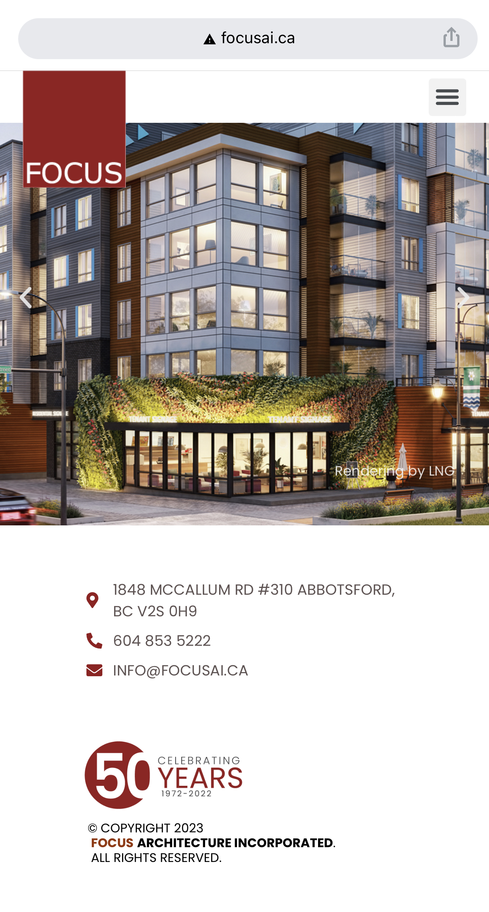

Rule of Thirds
Fort Nelson News


Fort Nelson News is a website that I support. It was developed years ago by a colleague of mine. The three-column design is held through almost all of the pages and provides an organizational structure for the site. It allows the large section in the centre, or on the right to draw the attention. This is where most of the important content is located. The other sections, or sides are used to include related but not essential content. Although the rule of thirds was initially presented as a vertical structure, I think this is also a good example of a vertical use of the rule of thirds design. The largest portion in the centre is used and thirds are taken off on the sides, or approximately thirds.
White Space and Clean Design
van der Zalm & Associates
van der Zalm and Associates is a client for whom we developed their website in 2019/2020. The structure of the website was designed by a graphics designer and then my colleague implemented the design. The page is optimized for multiple screen size and when in mobile or small screen size the images and use of white space is very clean. There is not a lot of visual clutter on any page, and each page uses the negative space to appropriately highlight the content. I have shared two views of the home page as images for this concept, however the staff (or meet our team) page is also a good example of use of clean design and white space.
Alignment
Focus Architecture Inc.
Focus Architecture is a site that the company I work for hosts, but they create the content and support the site changes and development. When looking at alignment I think of their site because of the clean lines, the image grids that auto adjust based on the device it is being viewed with, and the enhancement to their projects the clean design gives. The Alignment of the images allows each of the images to stand out, without needing to be highlighted or other wise outlined.